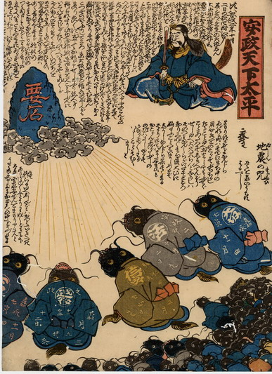

鹿島大明神を前に、要石に向かって、鯰たちが謝罪している。鯰たちは皆座って頭を下げている。体の大きな5体は、着物の柄に地震を起こした地名と年月日が書かれている。
出典：親書誌：U426_nichibunken_0192：安政天下太平；アンセイテンカタイヘイ／日付：2010／資源識別子：U426_nichibunken_0192_0001_0000
Copyright (c)2010- International Research Center for Japanese Studies, Kyoto, Japan. All rights reserved.